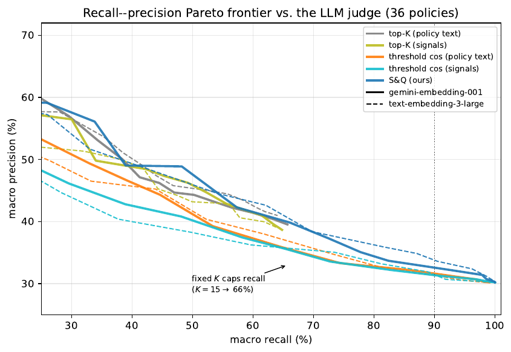

Customer-facing LLM agents are usually constrained by dozens of behavioral rules (policies)—for example "compensation only if the customer bought travel insurance." Every turn must decide which rules are relevant and put them in the prompt. Parlant's original approach asked an LLM "is this relevant now?" for every rule every turn—36 rules meant 36 calls and about 69,000 prompt tokens. Parlant's Signals and Queries (S&Q) replaces that with a small offline-trained classifier: for each rule an LLM offline writes 10 user messages that should trigger it and 10 that "look similar but should be handled by a neighboring rule", embeds them, and trains one logistic regression per rule; online each turn needs one embedding call and 36 vector dot products—37 µs of CPU. On 254 dialogue prefixes and 36 rules from τ²-bench airline support, with LLM judgments as gold, at ≥90% recall S&Q precision is 32% on Gemini embeddings and 34% on OpenAI embeddings versus 31% for a cosine threshold; after mining examples from real dialogues, precision rises to 43.5% (Gemini) and 41.6% (OpenAI).
1. Missing a rule is an error; adding an extra is only waste
Stuffing every rule into the prompt every turn hits middle-context neglect, diluted per-instruction attention, and harder full compliance as instruction count grows, while token cost grows linearly with rule count. So relevant rules must be filtered first.
The cost is asymmetric: missing a cancellation policy may let the agent approve an action that should be refused; adding an irrelevant rule only costs a few hundred tokens. S&Q therefore targets ≥90% recall per rule first, then precision. It is a pre-filter—dropped rules never come back; kept rules are still re-read by the agent model.
Direct vector similarity between dialogue and rule text is almost free, but dialogue is colloquial user speech and rules are formal text, so vectors separate poorly.
2. Method
2.1 Offline: positives and hard negatives per rule
For each rule, gemini-3.5-flash generates from the rule text alone:
- signals (10): user messages that should trigger the rule—e.g. cancellation → "I want to cancel my flight to Chicago next week";
- anti-signals (10): nearby-topic messages that another rule should handle—e.g. "I want to move my flight from Tuesday to Thursday" (a change rule).
No real dialogues are used in generation.
2.2 One logistic regression per rule
For each rule, train a logistic regression on the 20 message embeddings to output a "relevant" probability. Each rule's classifier depends only on its own examples, so adding or editing a rule only regenerates its examples and trains one classifier (~2 ms); other rules are untouched.
2.3 Online: max of two dialogue views
At turn , score two vectors and take the max: the embedding of the dialogue so far, and the embedding of each user message so far. All vectors are centered by subtracting the mean of all rules then renormalized. A rule is kept if its score exceeds a global threshold . Taking the max over single user messages keeps earlier topics from diluting a later topic shift. Real-dialogue scores sit below generated examples, so is negative (Gemini −0.45, OpenAI −0.4).
3. Experiments
Setup. 50 airline-support dialogues from a Parlant agent and the τ²-bench user simulator; every user-message-ending prefix is a query state (254 total). 36 rules: 6 sections of the τ²-bench airline policy plus 30 author-written rules (identity checks, baggage claims, unaccompanied minors, fare rules, fraud, …), with intentional near-synonym groups. Gold labels: gemini-3.1-flash-lite scores each (prefix, rule) 1–5 with Parlant's online relevance prompt; ≥4 is relevant—9,144 labels. Metrics are macro-averaged over the 31 rules that appear at least once. Four baselines: cosine top-K or cosine-threshold against rule text or against signals. Embeddings: gemini-embedding-001 and OpenAI text-embedding-3-large, each run separately.
3.1 Recall–precision curves
This checks whether S&Q is more precise than vector retrieval at matched recall. The paper reports S&Q highest at every recall level, leading by ~4 points in the mid range (60–70% recall), with a smaller gap at high recall: +2.9 on OpenAI, only +0.9 on Gemini. Top-K even at K=15 (15 of 36) reaches only ~66% recall because the number of simultaneously relevant rules varies a lot per turn.
Best precision at ≥90% recall:
At that operating point S&Q beats a cosine threshold by only 1–3 points. Using signals alone (no classifier) is no better than rule text; the lift comes from a classifier with negatives.

3.2 Ablations
This checks which component matters, via AUPRC and precision at 90% recall.
Dropping negatives hurts most. Two findings go against the default: using other rules' signals as negatives is slightly better than dedicated anti-signals—the authors keep the latter so rules stay independent; whole-dialogue-only view also has higher AUPRC because benchmark dialogues are short and single-topic (median ~1,600 characters), so per-message max does not help here. They therefore add a synthetic test: concatenate two different-task dialogues as "A then B"; at 30% false-positive rate, per-message max raises recall on B-topic rules by 12–19 points versus the whole-dialogue view.
3.3 Does fine-tuning the encoder help?
Same local small model all-MiniLM-L6-v2: frozen encoder + logistic regression is 91% recall / 32% precision; SetFit fine-tuning the encoder is 90% / 31%. Fine-tuning does not help, and each rule would need an ~90 MB model versus ~12 KB for logistic weights.
3.4 Examples mined from real dialogues
This checks whether example quality is the bottleneck. Split dialogue scenes in half; mine from one half: the user message where a rule first reaches its max score as a signal; the most signal-like user message the model marks clearly irrelevant as an anti-signal; evaluate on the other half.
Swapping only positives barely moves (Gemini +0.5, OpenAI −1.5); almost all of the lift comes from mined negatives. The eval half has only 131 prefixes; the authors say this only indicates direction and rough magnitude.
4. Limitations
Gold labels are another LLM's judgments, not human labels. Even at 90% recall S&Q precision is only low thirties, so most kept rules are still irrelevant and need a later model filter. Mining examples needs relevance labels on real dialogues; in the half-split only 22 of 29 appearing rules got enough examples. In long dialogues a once-triggered rule stays forever—the keep set only grows; the authors note deployments need a separate expiry mechanism.
5. Takeaways
For customer agents with many rules or tool descriptions, replace "ask an LLM every turn whether this rule is relevant" with one offline linear classifier per rule; online cost falls to one embedding call. The highest-leverage investment is negatives: prepare easily confused counterexamples for neighboring rules, ideally mined from real dialogues.